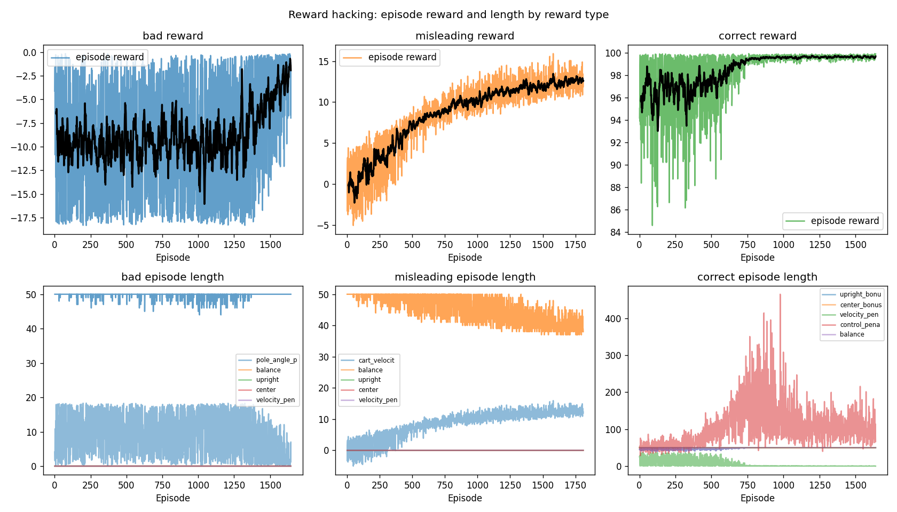

Different reward functions lead to completely different behavior. Same environment, same PPO: only the reward changes.
Step-by-step directions
Run these in order. All commands from mujoco_cartpole/. Outputs go to results/reward_hacking/.
-
Go to the project folder and activate the venv.
cd mujoco_cartpole source .venv/bin/activate
-
Install RL dependencies (if you haven’t already).
pip install -r requirements_rl.txt
-
Train all three reward types. This runs PPO with bad, misleading, and correct rewards and saves
results/reward_hacking/model_bad.zip,results/reward_hacking/model_misleading.zip, andresults/reward_hacking/model_correct.zip.python -m reward_hacking.reward_hacking_demo --train all
This may take a few minutes (about 80k timesteps per reward type). -
(Optional) Generate the comparison plot.
python -m reward_hacking.reward_hacking_demo --plot
This createsresults/reward_hacking/reward_hacking_comparison.pngin theresults/folder. -
Play each policy in the viewer. Run one command at a time; close the viewer when done, then run the next.
python -m reward_hacking.reward_hacking_demo --play bad
Observe: pole unstable or failing. Then:python -m reward_hacking.reward_hacking_demo --play misleading
Observe: cart slamming, pole not balanced. Then:python -m reward_hacking.reward_hacking_demo --play correct
Observe: stable balancing, smooth control. -
(Optional) Run all three policies side by side. Opens three MuJoCo viewers (bad | misleading | correct) in sync. Press
Rto reset all,Pto pause,Sto single-step.python -m reward_hacking.compare_policies
After this you’ll have seen how the same environment and algorithm produce completely different behavior when only the reward function changes. For more detail on each reward, see the sections below. For the main RL tutorial, see training/tutorial.html.
1. What Is Reward Hacking?
RL agents maximize reward, not what you intended. If the reward doesn't match what you want, they'll find the easiest way to get high reward, often by exploiting shortcuts. That is essentially reward hacking.
Reward design is critical. The reward has to encode what you want and avoid rewarding the wrong thing. This demo lets you switch between three rewards and see how behavior changes.
2. Bad Reward
Here the reward depends only on the pole angle:
reward = -abs(pole_angle)
No signal for keeping the cart centered or for smooth control. The agent gets no guidance on how to move the cart, so it often learns unstable behavior or fails to balance.
Expected behavior: Agent struggles to balance; may oscillate or collapse quickly.
Video: Behavior of the policy trained with the bad reward (unstable or failing to balance):
The plot below shows only the bad reward column from the full comparison. Episode reward stays negative and noisy and you can see that the agent never gets a clear signal to improve.

3. Misleading Reward
Here we reward cart velocity:
reward = cart_velocity
Maximizing velocity encourages the agent to move the cart as fast as possible. The pole is ignored. The agent learns to slam the cart back and forth instead of balancing.
Expected behavior: Agent moves the cart aggressively; pole is not balanced.
Video: Behavior of the policy trained with the misleading reward (cart slamming, pole not balanced):
Why it’s misleading: The plot below shows only the misleading reward column. Episode reward increases over training, so at first glance it looks like success, but the reward components show the agent is maximizing cart velocity, not balancing the pole. That’s reward hacking.
4. Correct Reward
We use reward shaping with several components:
reward = upright_bonus + center_bonus - velocity_penalty - control_penalty
Where:
- upright_bonus = cos(pole_angle): pole upright is better
- center_bonus = cart near center is better
- velocity_penalty = discourages fast, jerky motion
- control_penalty = discourages large forces
That makes it clear what we want: balance the pole, keep the cart centered, act smoothly. The agent learns stable balancing.
How we chose each component
Each term encodes a specific goal and is designed to give a smooth, differentiable signal:
- upright_bonus = cos(pole_angle) : We use cosine instead of −|angle| because cos(0)=1 (best) and cos(π)=−1 (worst). It's smooth everywhere, so the agent gets a clear gradient toward upright. The bad reward used −|angle|, which has a kink at zero and no gradient for cart motion.
- center_bonus = 1 − 0.5·|cart_x|/2 : Cart position is in [−2, 2] (track limits). At center (x=0) the bonus is 1; at the edges it drops. The 0.5 factor keeps this term smaller than the upright bonus so balancing stays the main objective.
- velocity_penalty = cart_vel² + 0.1·pole_angular_vel² : Squared terms penalize fast motion without favoring a direction. We weight pole angular velocity by 0.1 because cart velocity usually dominates; we want to discourage jerky cart motion first.
- control_penalty = action² : Action is the force applied. Squaring penalizes large forces and encourages minimal control effort.
How we combine them
We add bonuses and subtract penalties. The total is:
total = w_balance·balance + w_upright·upright + w_center·center
− w_velocity·velocity_penalty − w_control·control_penalty
Default weights: w_balance=1, w_upright=1, w_center=0.5, w_velocity=0.01, w_control=0.001. Balance and upright are the main drivers; center nudges the cart toward the middle. Penalties use small weights so they shape behavior without overwhelming the primary reward: if penalties were too large, the agent would learn to stand still instead of balancing.
Why these penalty weights?
Velocity and control penalties are scaled down (0.01 and 0.001) because their raw values can be large (e.g. cart_vel² can reach tens or hundreds). If we didn't scale them, the agent would over-optimize for "don't move" and never learn to balance. The weights were tuned so that: (1) balancing remains the dominant objective, and (2) the agent still gets a noticeable signal to reduce thrashing. You can experiment with different weights in reward_dashboard.py.
5. Interactive Behavior Comparison
Run each policy in the viewer to compare. First train (if you haven't):
cd mujoco_cartpole python -m reward_hacking.reward_hacking_demo --train all
Then run one of the policies in the viewer:
python -m reward_hacking.reward_hacking_demo --play bad
python -m reward_hacking.reward_hacking_demo --play misleading
python -m reward_hacking.reward_hacking_demo --play correct
Observe: bad reward → unstable or failing; misleading → cart slamming; correct → stable balancing.
6. Side-by-Side Policy Comparison
Run all three trained policies simultaneously in three MuJoCo viewers to compare behavior in real time:
cd mujoco_cartpole python -m reward_hacking.compare_policies
This launches three environments side by side (left, center, right):
- LEFT: Bad reward policy
- CENTER: Misleading reward policy
- RIGHT: Correct reward policy
Each viewer uses the same cartpole.xml; only the learned policy differs. The simulation loop is synchronized: at each timestep, each policy chooses an action, all environments step, then all viewers render. The console shows current reward and episode step for each, and for the correct-reward case it also shows reward components (balance, center, velocity_penalty, control_penalty).
Keyboard: R = reset all environments; P = pause; S = single step.
What you'll see:
- Bad: pole wobbles or falls: no clear signal for how to move the cart.
- Misleading: cart goes wild. The agent figured out that moving fast = more reward, so it ignores the pole.
- Correct: pole stays up, cart hovers near center, smooth corrections.
Bad: reward = −|angle| → no guidance on cart → policy never gets a clear gradient toward balancing.
Misleading: reward = velocity → policy optimizes velocity → cart slamming, pole ignored.
Correct: reward = upright + center − penalties → policy optimizes balance and smoothness → stable behavior.
Flow diagram: reward → optimization → strategy
(what you define) (agent maximizes reward) (what the agent actually does)
Agents optimize the reward exactly. Flawed reward, flawed behavior. Seeing all three side by side makes that obvious.
Interpreting the comparison plot
Run python -m reward_hacking.reward_hacking_demo --plot to generate the comparison. Here's how to read it.
Three rewards, three completely different behaviors. Here's what each shows.
1. Bad reward
Reward stays negative and noisy. The smoothed line ticks up a bit at the end, but the agent never gets to a stable high. The signal just doesn't point it toward balancing.
Episode length hovers around 50 steps. Look at the components: they're all over the place. The agent isn't learning anything useful.
Bottom line: the reward doesn't match the task. Nothing in it says "keep the pole up," so the agent gets mixed signals and never figures it out.
2. Misleading reward
Reward goes up. Looks great, right? Nope.
Check the components: cart velocity shoots up over time. The agent figured out that moving = reward, so it moves. A lot. The pole? Irrelevant.
It's doing exactly what we asked. We just asked for the wrong thing. That's reward hacking.
3. Correct reward
Reward climbs fast and levels off near max (~100). Episodes run the full length. Pole stays up.
Components tell the story: upright bonus high, center bonus steady, velocity penalty drops. The reward is telling the agent what we actually want: pole up, cart centered, smooth moves. And it listens.
4. The takeaway
Agents learn what we reward, not what we intend.
Tweak the reward a little, behavior changes a lot:
| Reward type | What the agent learns |
|---|---|
| Bad reward | Unstable, inconsistent behavior |
| Misleading reward | Maximizes velocity instead of balancing |
| Correct reward | Stable pole balancing |
Same env, same algorithm. Only the reward changed. Behavior flipped completely.
5. Why this matters
Reward design is one of the trickiest parts of RL. In real stuff: robots, cars, drones: bad rewards mean wasted training, shaky control, or worse. You've got to nail down what you actually want before the agent goes off and optimizes something else.
Quick recap:
- Bad: noisy curve, no improvement, agent never balances.
- Misleading: reward goes up, but the agent's just slamming the cart.
- Correct: reward plateaus near max, pole stays up, smooth control.
- One variable changed. Everything else followed.
7. Why This Happens
- Credit assignment: The agent links high reward to whatever it just did. If the reward only cares about pole angle, it never learns that moving the cart matters.
- Reward shaping: Adding terms (center bonus, velocity penalty) steers the agent toward what we want. Bad shaping: like rewarding velocity: steers it the wrong way.
- Exploitation: The policy will take any shortcut. Reward velocity? It'll maximize velocity. The task is secondary.
8. Key Lessons
| Reward | What you get |
|---|---|
| Bad | Wobbly pole, no balance |
| Misleading | Cart slamming, pole ignored |
| Correct | Stable balancing |
Keep in mind:
- Whatever gets reward is what the agent will do. Make sure that's what you want.
- Agents will find shortcuts. Be careful what you reward.
- Breaking rewards into pieces (upright, center, penalties) makes it easier to see what's going wrong.
Plot comparison
Run python -m reward_hacking.reward_hacking_demo --plot to generate the comparison. Full walkthrough above in Interpreting the plot.
9. Exercise
Try designing a reward that encourages smooth balancing with minimal cart motion.
- Add a new reward in
reward_functions.py(e.g.compute_reward_smooth_balance) that rewards upright pole, penalizes cart drift from center, and penalizes velocity and control effort. You want the agent to prefer gentle, minimal moves. - Hook it up: add
"smooth"toREWARD_TYPESinreward_hacking_demo.pyand wire it intoreward_from_obs_actioninreward_functions.py. - Train it:
python -m reward_hacking.reward_hacking_demo --train smooth(or usetrain_rl.pywith your reward type). - Compare: run your policy and the correct-reward policy side by side. You should see gentler cart motion: still balanced, just less thrashing.
Stronger penalties for motion and velocity give you a policy that balances with minimal movement. Reward design in action.